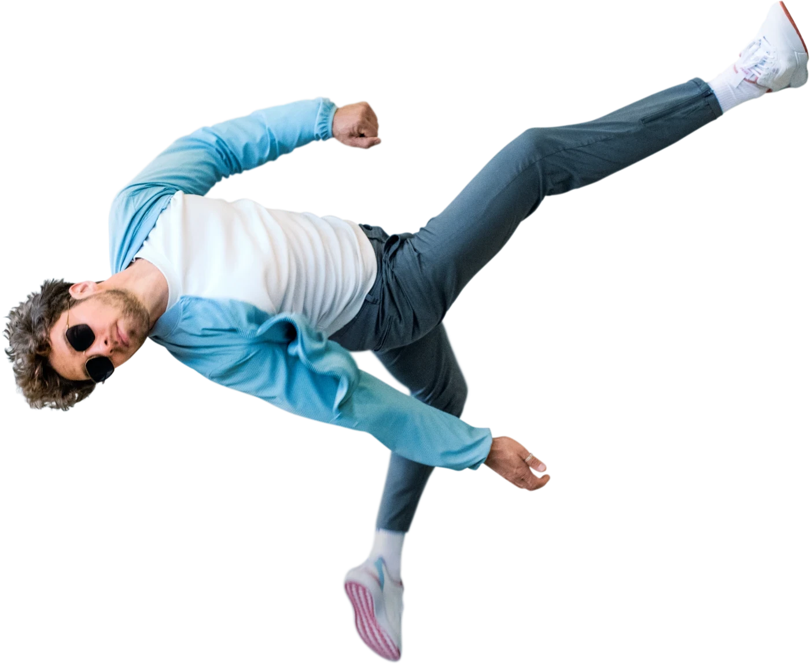
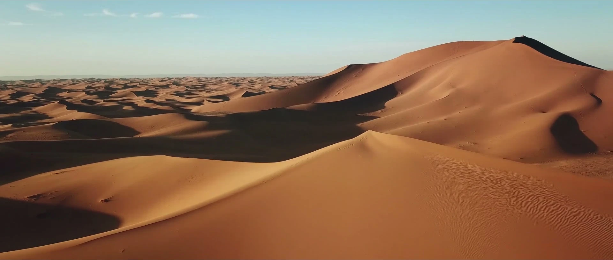
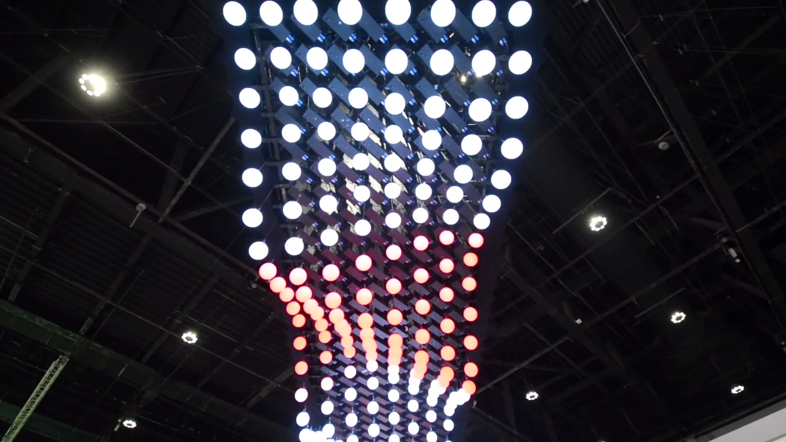
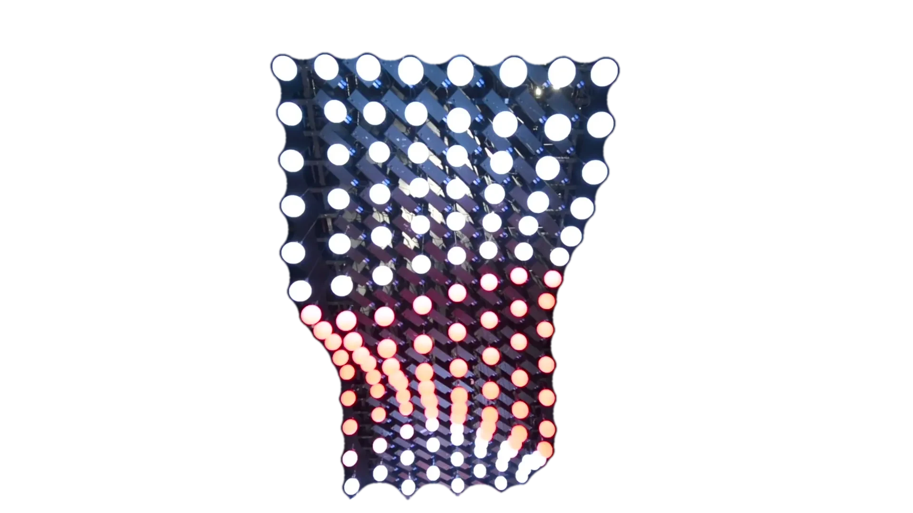

Antoni Gerges, Creative Director, Brand & Experiential. Big ideas, built.
Selected work
Ideas you can see in the work.




ZEISS Vision Care
A lens, the brackets and an eye: one picture.
Live six days after confirmation.
Open the project →Liwa International Festival
Built from nothing.
Six zones on open sand, for 16 days.
Open the project →Cityscape Abu Dhabi
From floor plan to full scale.
7,200 sq ft, built in three days.
Open the project →In numbers
In numbers
Years
Collectively managed
Government entities
Emirates
DHA print reach
Days to open a pavilion
Read moreClose
- 23
- From a first job in Cairo in 2003 to leading the whole assignment in Dubai, Abu Dhabi and now Tampa.
- Creative Director, Brand & Experiential.
- $10M+
- Managed a collective $10M+ in delivered projects — accountable for the client and the result, from first brief to final delivery.
- Founder of AntBrush; partner at MCX.
- 8
- Ministries, municipalities and authorities across the UAE.
- I led the creative, from the idea to the delivery.
- 7
- National Bullying Prevention Week, across all seven emirates.
- I led the campaign brand and its content.
- 83%
- The Dubai Health Authority launch campaign's reach in UAE print, 2008.
- I led the pitch, the identity and the launch.
- 3
- Cityscape Abu Dhabi, 2017: a 7,200 sq ft pavilion for fourteen government projects, built in the hall in three days.
- I led the concept, the design and the build.
- 2003CairoGraphic designer
- 2006DubaiJunior art director
- 2007AntBrushFounded in Abu Dhabi; Dubai and Cairo followed
- 2017MCXPartner, Creative Director & Co-producer, Dubai
- 2024Tampa, FloridaCreative direction, with new tools for making
Trusted by
- Dubai Health Authority
- Department of Municipal Affairs and Transport, Abu Dhabi
- UAE Ministry of Education
- Al Ain City Municipality
- Abu Dhabi Sports Council
- ZEISS
- Etisalat
- Unilever
- MAF
Venues
- Coca-Cola Arena, Dubai
- Marriott Mena House, Giza
- ADNEC, Abu Dhabi
How I work
Idea to delivery, at any scale.
- Find the one idea.
- Draw many. Choose one.
- Stay until it stands.
Read moreClose
Through AntBrush, the agency I founded, I led creative work across Dubai and Abu Dhabi for seventeen years. Our teams connected identities, campaigns, films and experiences, with me accountable for the client and the result.
Creative direction stays hands-on: shaping the idea, guiding the work and seeing it through. Today, 3D, motion and AI are part of that craft, this site included.
My system, four Cs: Creative · Connect · Code · CRM. Most businesses run these in four places. I run them as one system.
My system, four CsCreative · Connect · Code · CRM
See how, with the work →Films
The work, built and open
See the work in motion. Click any film to watch it with sound.